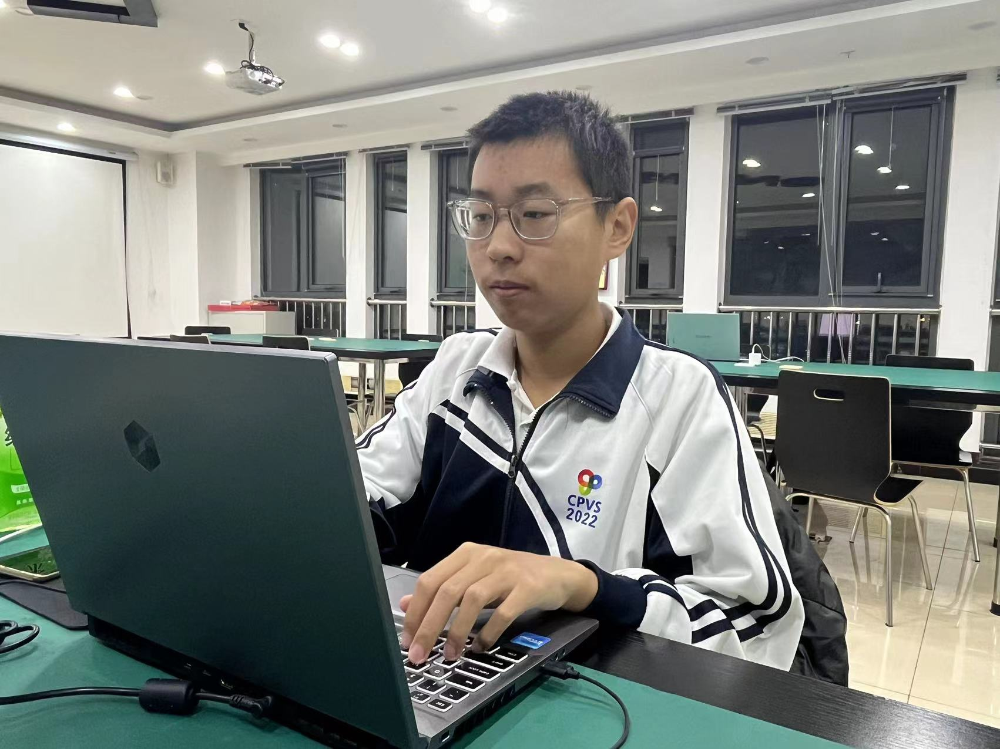

关于我

姓名:刘佳博
性别:男
爱好:听歌 写代码 战地5
性格 :开朗
家乡:北京
职业:大数据专业学生
个人简介
我是刘佳博，一名大数据专业的中职学生。虽然我才学习了一年，但回顾这一年的学习经历，我颇有些成长的感觉。 刚开始接触大数据时，我感到陌生而困惑，不知从何入手。然而，我并没有放弃，而是不断努力地学习。我翻阅了大量的书籍、观看了许多相关视频，并积极参加学校组织的培训课程。
慢慢地，我掌握了一些基础的数据分析工具和编程语言。我还加入了学校的大数据实践团队，与同伴一同进行实践项目。通过实践，我能够将理论知识运用到实际中，加深了对大数据的理解和应用。 在这一年的学习中，我逐渐找到了学习的方法和步骤，并不断提升自己。虽然还有很长的路要走，但我相信只要保持努力和热情，我一定能够成为一名出色的大数据专业人才。